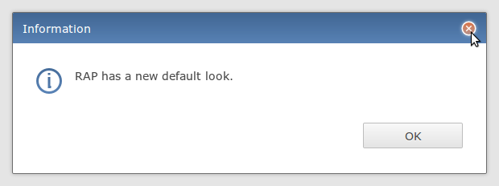
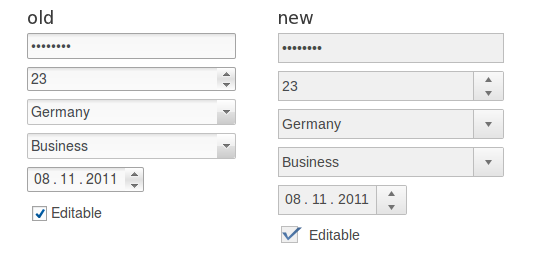

RAP 1.5 is about to get a new default look. The new theme aims at bringing a modern, decent look into RAP applications with more white space and subtle usage of roundings, shadows and gradients. To achieve this, the themability of many RWT widgets has been extended by adding missing CSS properties. The new look is already part of M3, but we will continue to improve and polish the theme during the next months. Any feedback is highly welcome.
 
Internet Explorer 9 was a significant improvement over previous versions, finally catching up to other browsers regarding performance and compatibility. RAP can now fully utilize all its new features (HTML5, CSS3, SVG) by switching to standard rendering in IE9 (as opposed to quirksmode used for previous IE versions). This gives RAP applications a noticable performance-boost in IE9, especially when using GC for drawing complex graphs.
As technology marches on, we also decided to no longer officially support IE6 in RAP 1.5. RAP 1.4 will continue to support it.
The way to start standalone RWT applications has been changed. The former init parameters have been replaced by an API that allows you to configure all aspects of the application to be started. This web.xml fragment and code snippet shows how starting an RWT application now looks like:
<context-param>
<param-name>org.eclipse.rwt.Configurator</param-name>
<param-value>com.example.ExampleConfigurator</param-value>
</context-param>
<listener>
<listener-class>org.eclipse.rwt.engine.RWTServletContextListener</listener-class>
</listener>public class ExampleConfigurator implements ApplicationConfigurator {
public void configure( ApplicationConfiguration configuration ) {
configuration.addEntryPoint( "default", ExampleEntryPoint.class );
configuration.addBranding( new ExampleBranding() );
// ...
}
}
The RWTServletContextListener needs to be registered so that RWT is
notified when the servlet context is created.
The remaining init parameter is used to specify a configurator, an
implementation of ApplicationConfigurator. This class is created and
its configure method is called before the application starts.
With the given ApplicationConfiguration object you can control all
aspects of the application.
Please read this FAQ entry for more details. We will integrate this information into the developer documentation before the 1.5 release.
In this milestone, we switched some more widgets to the new client/server protocol like Tree, TabFolder, Browser and ToolBar.
We're planning to complete this conversion before the end of this year. As the protocol stabilizes, we'll update the specification on the RAP Protocol wiki page.